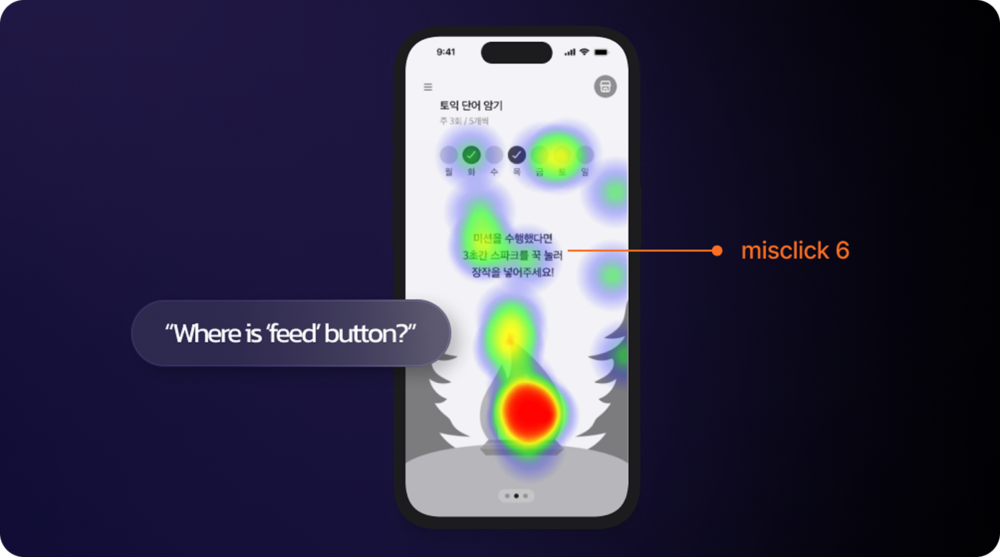

PROJECT OVERVIEW
PROBLEM
Most goal-tracking apps do not assist users in setting achievable goals.
Users set overly ambitious goals, driven by extrinsic motivation, but fail to
accomplish them as their motivation fades over time.
Users set overly ambitious goals, driven by extrinsic motivation, but fail to
accomplish them as their motivation fades over time.
SOLUTION
"Create a gamified service that helps users set small, clear goals at first
and supports their gradual growth through a fun level-up system”
and supports their gradual growth through a fun level-up system”
DIARY STUDY
Conducted a diary study with 4 testers, assigning them tasks to set and maintain goals for 3 days.
1. Goal Setting phase
- Lack of guidance leads to vague, multiple goals at the start (e.g., "Learn English words," "Go for a walk")
2. Goal Tracking phase
- The process of tracking goals feels like a chore.
- Excessive push notifications are not only ineffective but also cause stress.
DESIGN GOAL
Meaningful and Engaging Growth Experience
Help users set clear and achievable goal at start.
Make the goal tracking experience enjoyable
Visually show gradual growth.
USABILITY TEST
Tested the user flow of tracking goal with a hi-fi wireframe.

Text instructions lead to misclicks.
Misclicks were frequent with text instructions for goal tracking; a button is needed to make the process more intuitive.
The goal-tracking process is not enjoyable.
There were feedbacks that clicking to track goal is not fun.